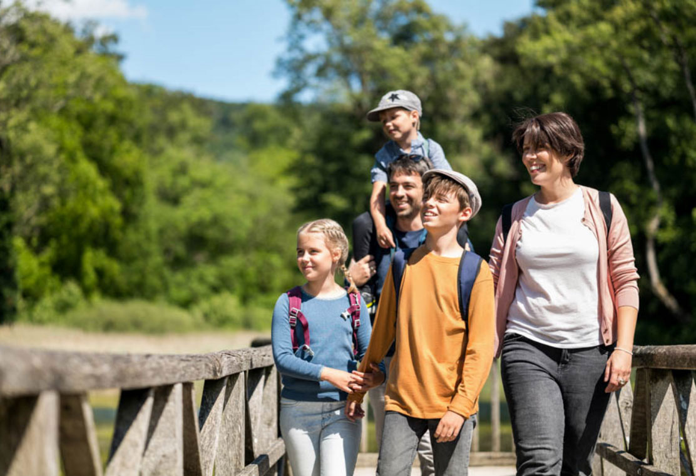
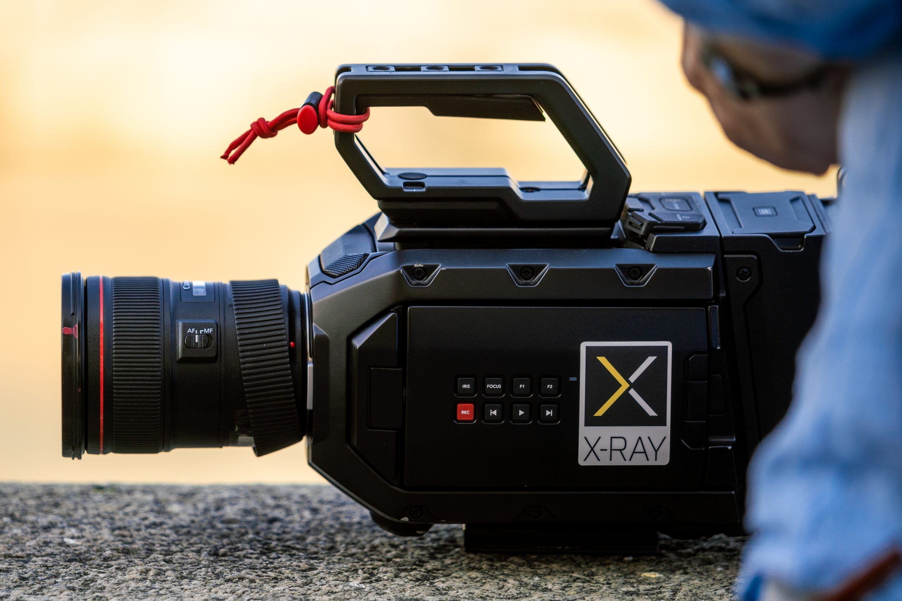
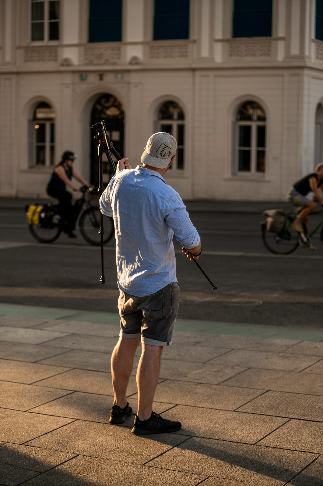
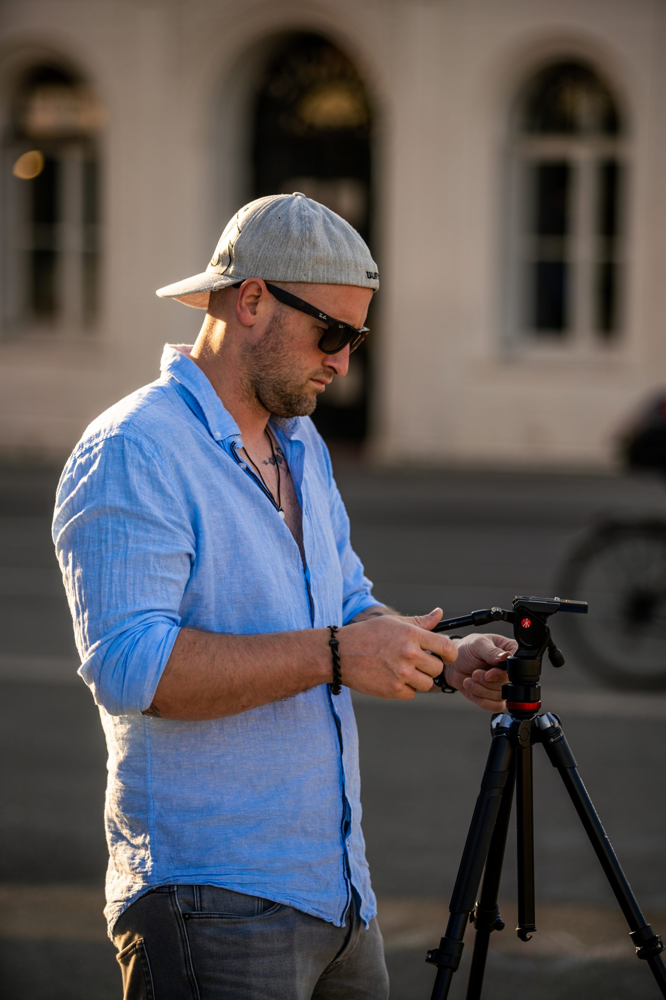
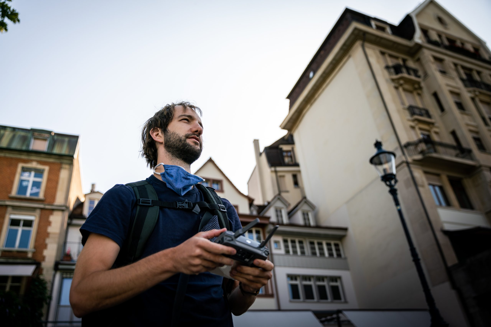

Für den Tarifverbund Nordwestschweiz entstand im Team von The Bloc Switzerland ein zugänglicher, interaktiver Auftritt mit neuer Navigation, Fotografie, Drohnenbildern und einer filmischen Landingpage-Sequenz.

Digital Experience · Filmcontent · Basel
TNW Website
Eine digitale Mobilitätsplattform, in der klare Nutzerführung, frische Bildwelten und bewegter Content als ein System zusammenspielen.
Eine ähnliche Idee?
Ähnliches Projekt anfragenBewegung macht Mobilität spürbar.
Die Sequenz bringt Menschen, Stadt und öffentlichen Verkehr in einen ruhigen visuellen Fluss. Sie wurde für den digitalen Auftritt optimiert und funktioniert als atmosphärischer Einstieg, ohne die Navigation zu überlagern.
Die Bahn wird Teil der Landschaft.
Die Luftaufnahmen erweitern die digitale Bildwelt um Bewegung, Weite und regionale Verortung. Die Bahn verbindet nicht nur Orte, sondern wird als ruhige Linie durch die Landschaft inszeniert.
Eine menschliche Bildwelt für die Region.
Servicekommunikation wird nahbar, wenn Nutzungssituationen, Menschen und das Unterwegssein im Mittelpunkt stehen.

Produktion zwischen Stadt, Menschen und Bewegung.



